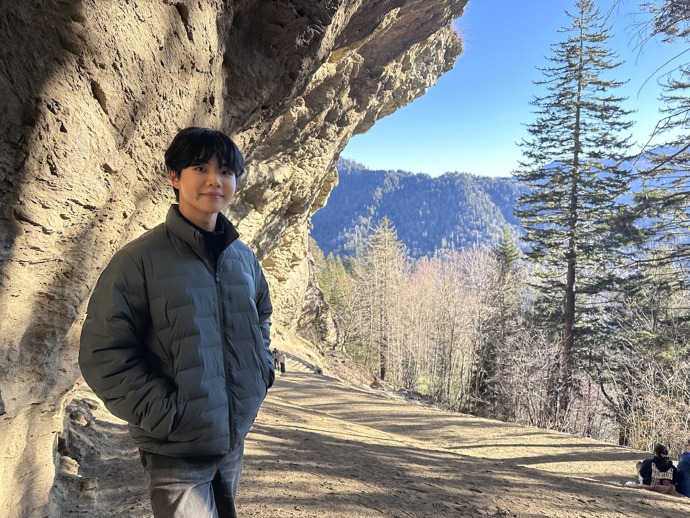
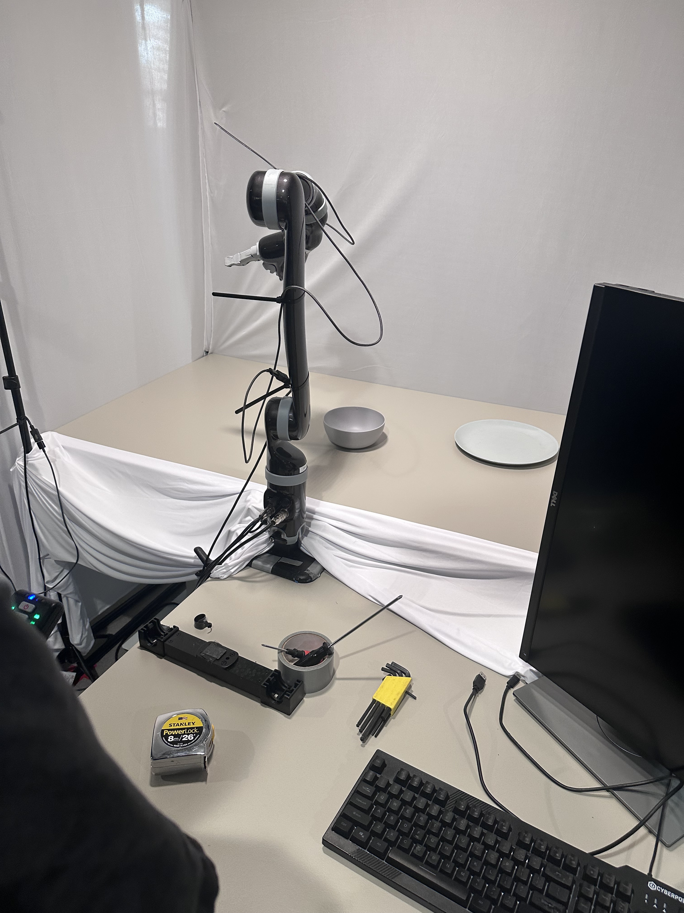
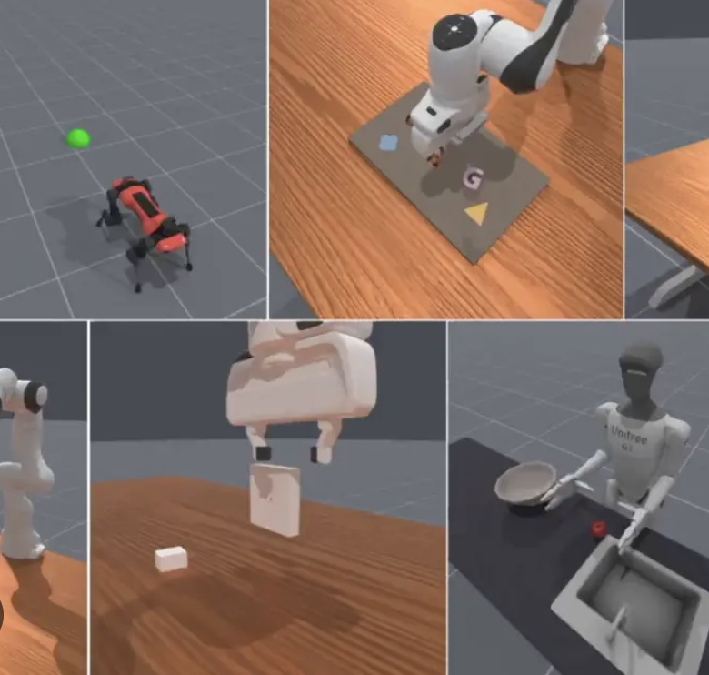

I'm Junghoon (Phillip) Suh, a Computer Science M.S./B.S. student at the University of Southern California. I've shipped production frontend/backend features for government data platforms, built AI-agent research tools from scratch, and I currently do robot-learning research on vision-language-action models at USC ICAROS Lab.

Living in an age of digitalization, I've always wondered how we went from stone and wood tools to the technology we have today — and I've built my education and career around chasing that curiosity. I'm currently a Progressive Degree Program student at USC, finishing my B.S. in Computer Science & Business Administration while starting my M.S. in Computer Science.
On the engineering side, I've shipped features for nationwide government platforms used by thousands of civil servants, and built a founding engineering role's core product from an Excel model into a full-stack valuation simulator. On the research side, I work on robot learning at USC's ICAROS and LIRA labs — closing the gap between vision-language models and real robot actions.
Outside of that, I like building fast, scoped side projects — an AI-agent soccer analytics platform, an earnings-research dashboard, a social travel-diary app — usually to learn a piece of the stack I haven't touched yet.
Full-stack and platform engineering roles, from a founding-team startup to nationwide government dashboards.
Working on closing the gap between vision-language models and real robot manipulation policies.


Full-stack apps and AI agents, built end to end — see the full list with write-ups, demos, and code.